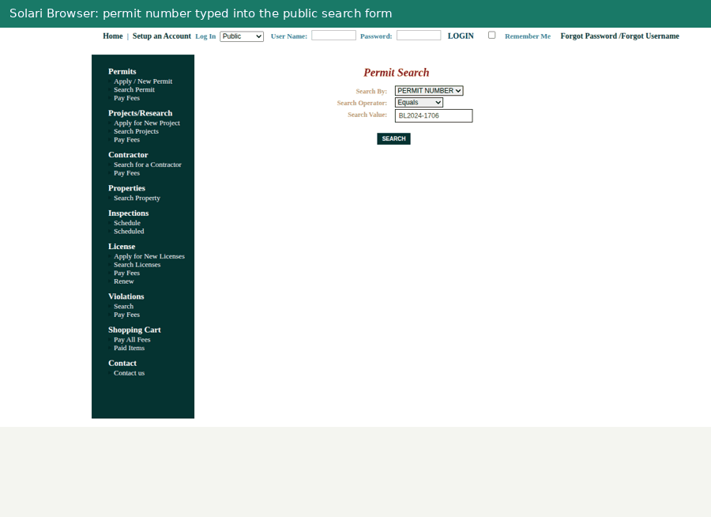

Type one of your permit numbers. Two minutes later you have what the portal says about it, with every reviewer comment linked to its source.
PermitPilot reads a city's public permit portal the way a coordinator does: it searches the permit, opens every departmental review and the reviewer's comment page behind it, lists attachments with the portal's own labels (including VOID), downloads the applicant's response and drawing revisions, and links each comment to what the applicant said about it. Run it again and it tells you exactly what changed.
Open the live demo No account, no install. Public records only.

How the pilot works
Feedback goes to
If the demo is busy or a portal is not supported yet, email the city and permit number instead and I will run it for you the same day.
What a report looks like
What it will not do
- It never logs in, submits, pays, or edits anything. The only form it fills is the public search box.
- It does not read drawings. Revisions are downloaded and hashed, not interpreted.
- Applicant responses are shown as assertions, never as proof a comment was resolved. The portal's own status rows are the record.
- Every quote is checked against the page it came from. That proves traceability, not that a summary is right, which is why I want your read on it.
Who is behind this. Dinesh, building PermitPilot on Solari's cloud browser, sandbox and desktop infrastructure as an entry to the Solari challenge. The code is public at github.com/dineshsai05/solari-cookbook. Your permit number and email are used for the pilot only and are not published.
- Portals today
- Village of Pinecrest, FL · Town of Atherton, CA · other eTRAKiT cities on request
- Turnaround
- About two minutes in the demo
- Cost
- Your feedback